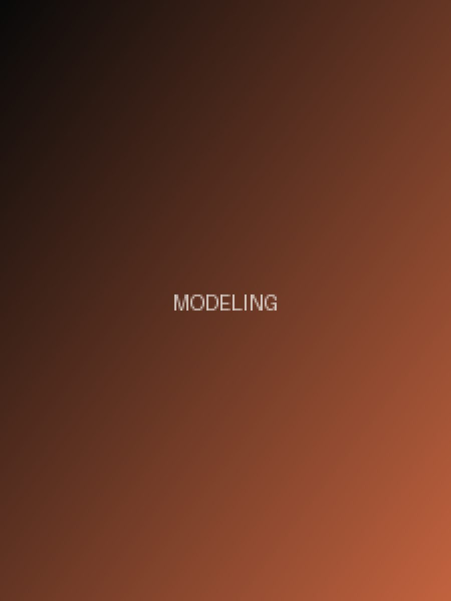
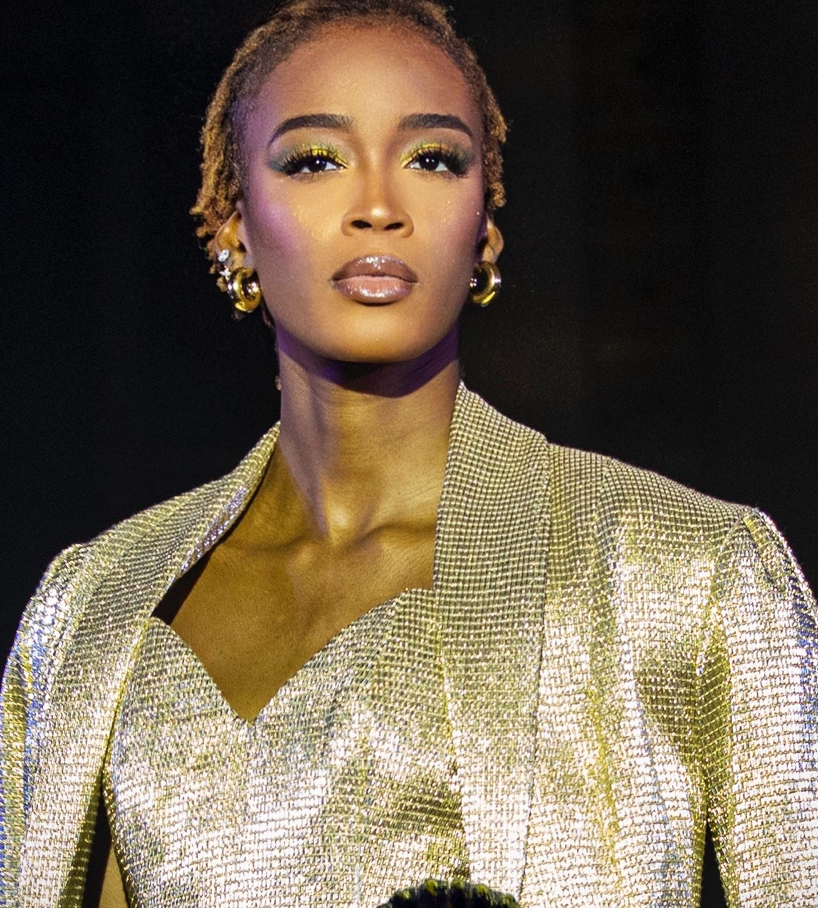
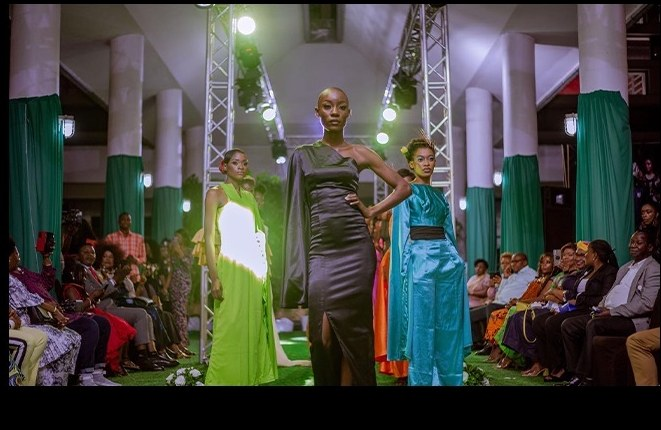
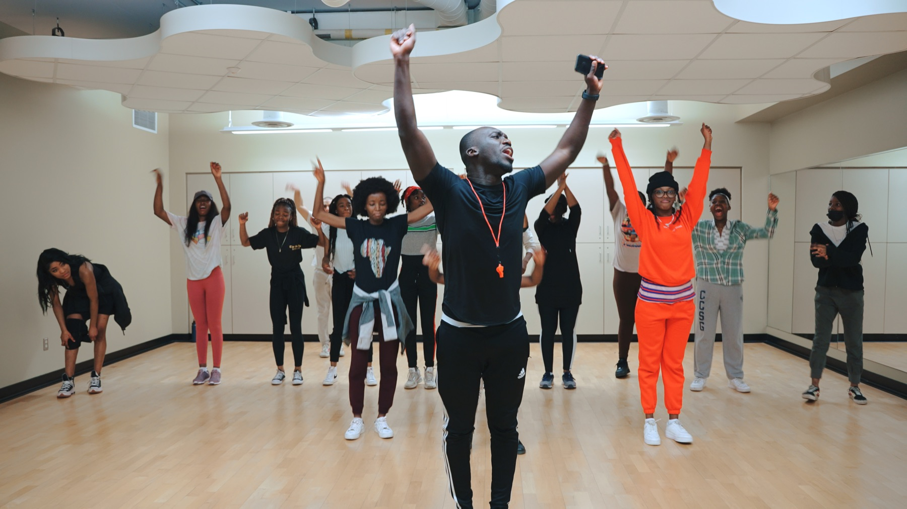
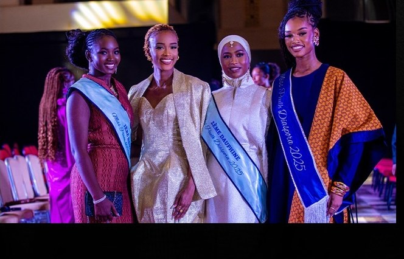
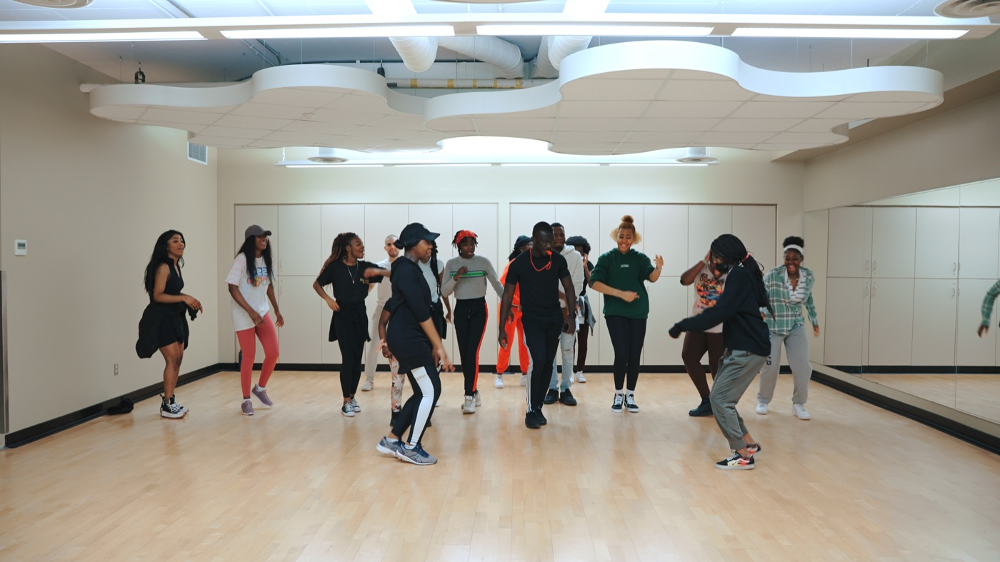
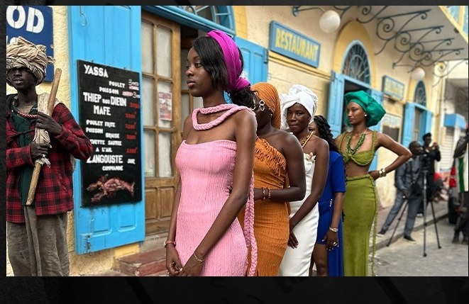
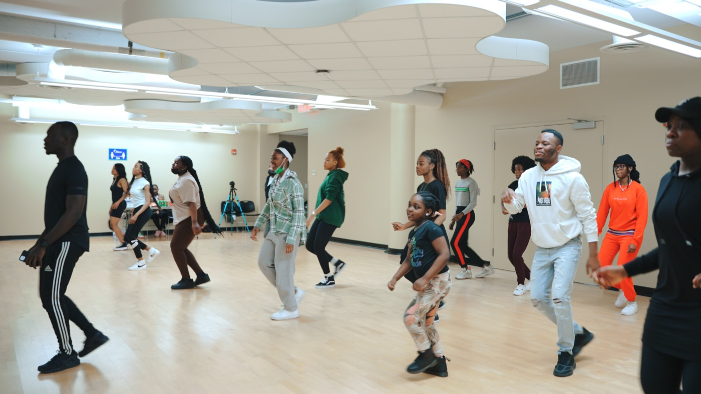
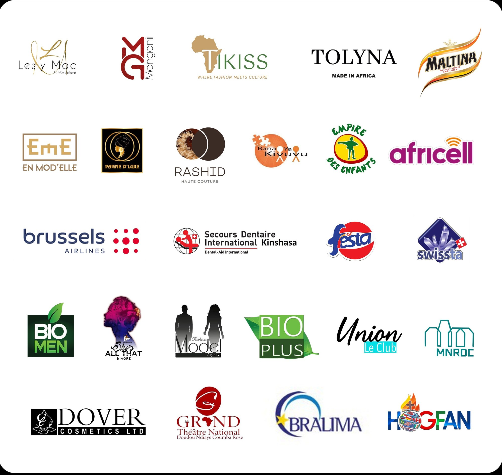

01 / MODELINGModeling
Formations, castings, défilés et expériences professionnelles pour développer présence, confiance et discipline.
Découvrir Shining Light Modeling →Shining Light transforme la mode en plateforme de confiance, de discipline et d’impact. Nous accompagnons les talents, créons des expériences professionnelles et redonnons à la communauté.
Shining Light a été fondée en 2020 par Claire Simada Aeschimann, titulaire d’un master en médecine expérimentale et d’un bachelor en biotechnologie. Passionnée par la recherche et animée d’une détermination sans faille, elle trace son chemin dans le domaine médical tout en laissant une empreinte remarquable dans l’univers de la mode et de la philanthropie.
Active dans le mannequinat depuis l’âge de 17 ans, Claire a suivi en 2017 une formation professionnelle chez Models International Management à Ottawa. Elle est également décoratrice d’intérieur. Son parcours l’a amenée à collaborer avec de grandes entreprises et à participer à des événements prestigieux tels que le défilé Marie-Victorine, la Fashion Week de New York et celle de Montréal. Son visage illumine aussi des campagnes publicitaires dans les rues de Montréal.
Dès le début de sa carrière, elle a dû affronter des défis liés aux barrières et aux stéréotypes présents dans sa ville natale. Ces expériences ont renforcé son engagement à défendre la dignité, le respect et l’inclusion dans le monde du mannequinat. Confrontée, directement et indirectement, à des traumatismes liés à l’enfance, elle fonde Shining Light Charity, avec l’aspiration d’impacter la jeunesse d’Afrique et du monde : l’encourager à poursuivre sa passion et à explorer ses capacités sans limites.

Chaque univers répond à un besoin concret : professionnaliser les mannequins, éveiller les talents artistiques et transformer la réussite en actions utiles.

01 / MODELING 03 / CHARITY
03 / CHARITYDéfilés, ateliers de danse et actions caritatives : un aperçu de l’énergie qui anime la communauté Shining Light, de Montréal à Dakar et Kinshasa.

Modeling
TalentCharity
Modeling
Talent Charity
Charity
Modeling
Talent Charity
CharityDes conversations vraies sur les traumatismes de l’enfance, la résilience et la reconstruction — portées par Shining Light Charity.
Talk Therapy — « I was sexually abused at 6 years old » : parler des traumatismes pour guérir.
Talk Therapy EP 10 — Grandir après la perte de ses parents.
« How Fashion is not an option in African Society » — la mode comme levier.
Vous souhaitez devenir mannequin, inscrire un jeune à un atelier, proposer un partenariat ou soutenir une action caritative? Commencez par nous parler de votre projet.
Modeling, Talent, Charity ou partenariat.
Expliquez-nous ce que vous souhaitez développer ou soutenir.
Notre équipe vous dirige vers le programme ou la collaboration adaptée.

De Montréal à Dakar, Saint-Louis et Kinshasa, Shining Light agit auprès des enfants et des jeunes à travers des ateliers, de l’accompagnement, des dons et des initiatives éducatives et artistiques. Et l’histoire ne fait que commencer : de nouvelles villes d’Afrique — comme Lagos, Conakry ou Abidjan — rejoindront bientôt l’aventure.
Des marques, institutions et organisations qui ont accompagné nos défilés, formations et actions caritatives à travers le monde.

Rejoignez une communauté qui ne se contente pas de mettre les talents en lumière : elle les prépare, les protège et leur donne les moyens d’avoir un impact.
Rejoindre Shining Light